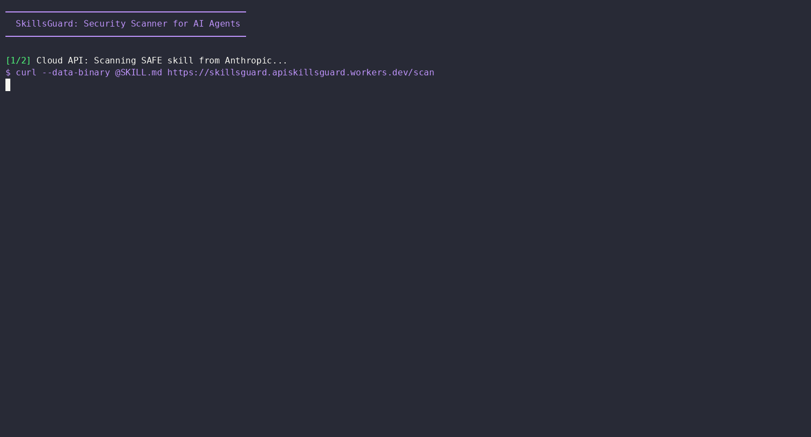

案例 1 · redditCodex SecurityGitHubskills
SkillsGuard：在 Codex/Agent skills 进入仓库前做静态安全扫描
为什么值得看
它抓住了最近 Codex/Claude skills 生态里最实际的风险：SKILL.md 和随包脚本会成为新供应链入口，普通 grep 很容易漏掉编码后的危险命令。
Codex 具体做了什么
Codex 在这里是被保护的执行环境：团队把 skills、MCP、脚本交给 agent 前，先用 scanner / pre-commit / MCP 方式拦截可疑 payload，避免 Codex 执行污染上下文或危险脚本。
最有脑洞/最实用的点
作者不是只列黑名单，而是递归解码 base64、hex、URL 与 Unicode tag，再套规则和 SARIF 输出，适合放进 CI。
可借鉴做法
把 skills 当作代码依赖审计：新增 skill 必须过静态扫描、风险分级、SARIF 留档，再允许 Codex/Claude 调用。
不确定点
规则库仍可能被绕过；reddit 讨论热度不算高，效果需要更多真实恶意样本验证。